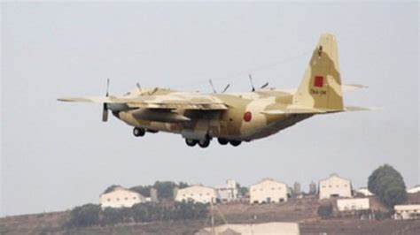
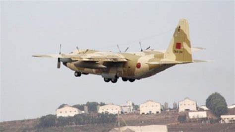

Vleugels University
- Music and aerospace construction -

- Music and aerospace construction -
 

In the study Aircraft Construction the phenomenon that is the plane stands at central. You will learn about the plane itself, the history behind the plane and how you can make one. Are you very fascinated by the sky and want to contribute to the human dream to be able to soar through the air, then this study is for you
In the first and second year you work on your basic knowledge and skills. That will amount to mathematics, mechanics and practical skills that will help you in your future working field. You will do, among other things, assignments such as making aircraft parts and obtaining the economic route of parts. After completing the first two years, you will possess sufficient knowledge and insight into planes.
In the second year you will go deeper in on the subject Aircraft Construction and you will specialize in the technical field of it.
In the third year you will do an internship for six months. You are free in your choice to do the internship in the Netherlands or abroad, your role/function during the internship and what kind of assignment you will do for the company.
In the first part of your fourth year you can follow a minor. It is useful to follow a study related to aircraft construction, this can extend your specializations and improve you in your own field. You will do a graduation assignment in the last six months. This assignment will be carried out with a team. You will have to build a simple plane with self acquired parts. The school will therefore help with nothing except providing a budget.